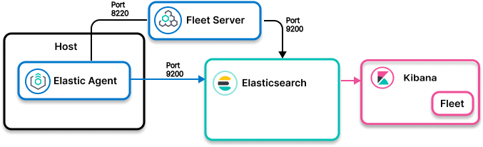

Elastic Agent to Elasticsearch: Agent installed
edit

- Ingest model
-
Control path: Elastic Agent to Fleet to Elasticsearch
Data path: Elastic Agent to Elasticsearch - Use when
- An Elastic Agent integration exists in the Kibana integrations UI for the software you want to monitor, observe, and protect.
- Examples
-
- System integration that collects metrics and logs from operating systems
- Kubernetes integration that collects metrics and logs from Kubernetes master and worker nodes, and from workloads running on worker node pods
Process overview
edit- Find the integration for your data source. In Kibana, go to Management> Integrations.
- Enable the integration and set up Elastic Agent.
- Launch discover/dashboard to explore.
For details and next steps, check out the Elastic Agent integrations docs for your data source.